如果你打过诸如Kaggle、天池等数据挖掘的比赛，XGBoost的威名想必你也有所耳闻。
本文将详细介绍XGBoost相关内容，包括但不限于
- 泰勒公式
- XGBoost的推导
- XGBoost为什么快
泰勒公式
在介绍XGBoost前，首先要介绍一下泰勒公式，因为在之后的推导中会用到。假如你已经掌握，可以跳过本小节。
泰勒公式（Taylor’s Formula）是一个用函数在某点的信息描述其附近取值的公式。其初衷是用多项式来近似表示函数在某点周围的情况。
比如在SVM的高斯核函数中，我们就用到了在x=0处的展开： 。当然这个公式只对0附近的x有用，x离0越远，这个公式就越不准确。实际函数值和多项式的偏差称为泰勒公式的余项。
对于一般的函数，泰勒公式的系数的选择依赖于函数在一点的各阶导数值。函数在处的基本形式如下：
\begin{align*} f(x) &= \sum_{n=0}^\infty\frac{f^{(n)}(x_0)}{n!}(x-x_0)^n \tag{1-1} \\&= f(x_0) +f^{1}(x_0)(x-x_0)+ \frac{f^{2}(x_0)}{2}(x-x_0)^2 + \cdots + \frac{f^{(n)}(x_0)}{n!}(x-x_0)^n \end{align*}
还有另外一种常见的写法，，将在处进行泰勒展开，得：
\begin{align*} f(x^{t+1}) &= f(x^t) +f^{1}(x^t)\Delta x+ \frac{f^{2}(x^t)}{2}\Delta x^2 + \cdots \end{align*}
如果你想更直观的了解泰勒公式，可以查看：如何通俗地解释泰勒公式？ – 马同学的回答
梯度下降法
梯度下降法其实可以泰勒公式来表示。假设要最小化损失函数, 我们知道，梯度下降法的过程为：
- 选取初值
- 迭代更新
其中，为学习率，一般设定为一个小的数，如0.1，当然，还有其它的可以变化的学习率的方式。
为什么这样是对的呢？用泰勒公式在处一阶展开则可以表示为
\begin{align*} L(w^{t + 1}) &=L(w^{t}) + L'(w^{t})(w^{t+1} - w^t) + R \hspace{5ex} & R为残差项\\ &\approx L(w^{t}) + L'(w^{t})(w^{t+1} - w^t) & 当(w^{t+1} - w^t) 较小的时候，R \approx0 \\ &= L(w^{t}) + \eta v L'(w^{t}) & 设w^{t+1} - w^t = \eta v, \eta为学习率，v则为单位向量\\ \end{align*}
要使得迭代后损失函数变小，即，回想向量相乘的公式，, 则我们可以令v和反向，这样可以让他们向量乘积最小，于是
于是
\begin{align*} w^{t+1} = w^{t} -\eta \frac{L'(w^t)}{|\!|L'(w^t)|\!|} \end{align*}
又因为为标量，可以并入中，即简化为：
\begin{align*} w^{t+1} = w^{t} -\eta L'(w^t)\tag{1-2} \end{align*}
牛顿法
牛顿法其实是泰勒公式在处二阶展开，即
假设参数w为一维向量，若极小，必然有其一阶导数为0，因此可以让L对求偏导得
令偏导为0，可得：
如果扩展到高维，即为向量，则
在数值分析中的做法
上面的做法是在最优化问题中的，求的是一阶导为0，即。
而在数值分析中，想要求的是方程式的根，即，我们只需要进行一阶展开,并令其为0，得：
于是有：
这就是迭代的公式。
如果你对这两个困惑的话，可以参考wiki百科：
牛顿法和梯度下降法对比
梯度下降法只利用到了目标函数的一阶偏导数信息，以负梯度方向作为搜索方向，只考虑目标函数在迭代点的局部性质。
而牛顿法不仅使用目标函数的一阶偏导数，还进一步利用了目标函数的二阶偏导数，这样就考虑了梯度变化的趋势，因而能更全面的确定合适的搜索方向以加快收敛。但牛顿法主要有一下两个缺点：
- 对目标函数有严格的要求，函数必须有连续的一、二阶偏导，海森矩阵必须正定。
- 计算相当复杂，除需计算梯度以外，还需计算二阶偏导数矩阵和它的逆矩阵，计算量和空间消耗比较大。
因此，有拟牛顿法，可以参考https://blog.csdn.net/itplus/article/details/21896453
XGBoost
XGBoost其实也是GBDT的一种，等下你会发现，还是加性模型和前向优化算法。
在正式介绍之前，首先讲点别的。
在有监督学习中，可以分为：模型，参数 、目标函数和学习方法。
- 模型即给定输入如何预测输出，而这个y可以很多种形式，如回归，概率，类别、排序等
- 参数即比如线性回归的w
- 目标函数可以分为损失函数+正则
- 损失函数：如平方误差等，告诉我们模型拟合数据的情况。 => Bias
- 正则项：惩罚复杂的模型，鼓励简单的模型。 => Variance
- 模型学习方法即解决给定目标函数后怎么学的问题。
讲这三个方面的内容是为什么呢？ 这三个方面的内容指导着XGBoost整个系统的设计！下面你可以带着这三个看看XGBoost是怎么做的！
接下来开始XGBoost之旅~ 本小节主要是根据陈天奇大牛的博文以及PPT来进行介绍。
CART
前面讲过分类回归树CART，这里就当复习，过一遍就好。
假设要判断一个人是否喜欢电脑游戏，输入为年龄，性别职业等特征。可以得到如下的回归树：
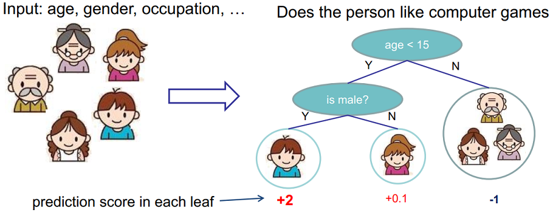
在叶子节点上会有一个分数，而这个分数我们可以做很多事情，诸如进行回归，映射成概率进行分类、排序等。
Tree ensemble
单棵CART拟合能力有限，想想我们之前的集成学习，可以使用多棵树！
比如下图用两棵树一起进行预测，样本的预测结果就是两棵树的和：
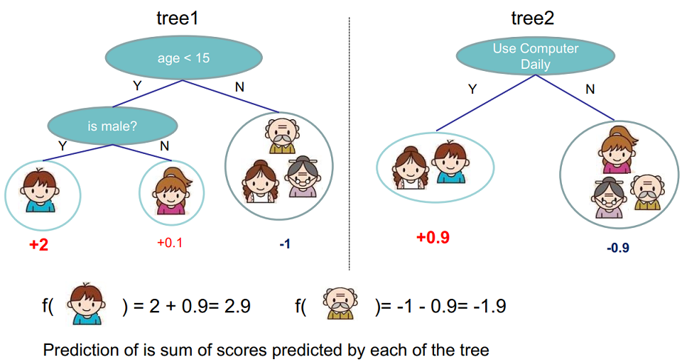
而“一起预测”的学习方法又分为随机森林（Random Forest）和提升树（Boosted tree）。这是不是把前面的集成学习的知识串起来了？这里，多棵树即我们的模型：
这里假设有K棵树，是回归树，而 对应了所有回归树组成的函数空间。
那么模型的参数是什么呢？就是树的结构，以及每个叶子节点上预测的分数。或者说就是一棵棵的树。
模型学习
那么如何学习模型呢？这个问题的通用答案就是：定义目标函数，然后去优化目标函数!
目标函数
因此，这里定义目标函数如下，并带了正则项：
那么，如何优化上面的目标函数？我们不能用诸如梯度下降的方法，因为是树，而非数值型的向量。
这时候就要想起我们的前向分步算法，即贪心法找局部最优解：
因此，我们每一步找一个使得我们的损失函数降低最大的（贪心法体现在这），因此我们的目标函数可以写为
\begin{align*} Obj^{\ (t)} &= \sum_{i=1}^N l(y_i,\hat y_i^{(t)}) +\sum_{j=1}^t\Omega(f_j)\\ &=\sum_{i=1}^N l(y_i,\hat y_i^{(t-1)} + f_t({\bf x_i})) + \Omega(f_t) + constant\\ &= \sum_{i=1}^N l(y_i,\hat y_i^{(t-1)} + f_t({\bf x_i})) + \Omega(f_t) \tag{2-2} \end{align*}
这里简单解释一下上式的意思，第1行的目标函数即在第t轮，每个样本的损失+t轮每棵树的正则项。而在第t轮，前面的t-1轮的正则项都相当于常数，可以不做考虑。
假设损失函数使用的是平方损失，则式2-2写为：
\begin{align*} Obj^{\ (t)} &=\sum_{i=1}^N \left(y_i - \left(\hat y_i^{(t-1)} + f_t({\bf x_i})\right)\right)^2 + \Omega(f_t) \\ &= \sum_{i=1}^N (\underbrace {y_i - \hat y_i^{(t-1)}}_{残差} - f_t({\bf x_i}))^2 + \Omega(f_t) \end{align*}
这就是之前我们GBDT中使用平方损失，然后每一轮拟合的残差。
更一般的，我们之前使用“负梯度”，而现在，我们采用泰勒展开来定义一个近似的目标函数：
\begin{align*} Obj^{\ (t)} &=\sum_{i=1}^N l(y_i,\hat y_i^{(t-1)} + f_t({\bf x_i})) + \Omega(f_t) \\ &= \sum_{i=1}^N \left(l(y_i,\hat y_i^{(t-1)}) + g_if_t({\bf x_i}) + \frac{1}{2} h_if_t^2({\bf x_i})\right) + \Omega(f_t) \hspace{5ex} \tag{2-3}\\ &其中，g_i=\frac{\partial l(y_i,\hat y_i^{(t-1)})}{\partial \hat y_i^{(t-1)}},h_i=\frac{\partial^2l(y_i,\hat y_i^{(t-1)})}{\partial^2 \hat y_i^{(t-1)}} \end{align*}
移除对当前t轮来说是常数项的得到：
可以发现，2-4所示的目标函数只依赖每个数据点在误差函数上的一阶导数和二阶导数。
之所以要这么推导，是因为使得工具更一般化，陈天奇的解释原话如下:
因为这样做使得我们**可以很清楚地理解整个目标是什么，**并且一步一步推导出如何进行树的学习。
这一个抽象的形式对于实现机器学习工具也是非常有帮助的。传统的GBDT可能大家可以理解如优化平方残差，但是这样一个形式包含可所有可以求导的目标函数。也就是说有了这个形式，我们写出来的代码可以用来求解包括回归，分类和排序的各种问题，正式的推导可以使得机器学习的工具更加一般。
正则项
之前讨论了目标函数中训练误差的部分，接下来讨论树的复杂度定义，即正则项。
什么指标能衡量树的复杂度呢？如树的深度，内部节点个数，叶子节点个数(T)，叶节点分数(W)…
XGBoost采用衡量树复杂度的方式为:一棵树里面叶子节点的个数T，以及每棵树叶子节点上面输出分数w的平方和(相当于L2正则)：
一个例子如下：
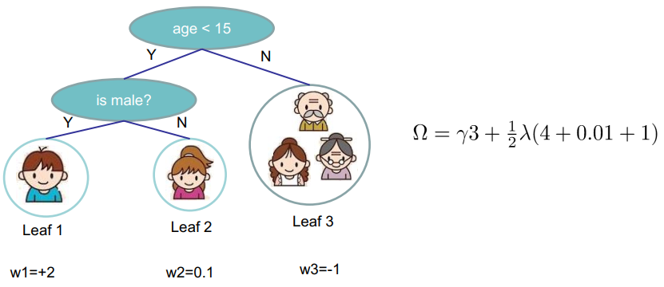
完整的目标函数
将2-4和2-5合起来，就是：
第一项是对样本的累加，而最后一项是对叶结点的累加，我们可以进行改写，将其合并起来。
定义q函数将输入x映射到某个叶节点上，则，此外，定义每个叶子节点j上的样本集合为，则目标函数可以改写为：
\begin{align*} Obj^{\ (t)} &=\sum_{i=1}^N \left(g_if_t({\bf x_i}) + \frac{1}{2} h_if_t^2({\bf x_i})\right) +\gamma T +\frac{1}{2}\lambda \sum_{j=1}^{T} w_j^2\\ &=\sum_{i=1}^N \left(g_iw_{q({\bf x_i})} + \frac{1}{2} h_iw_{q({\bf x_i})}^2\right) +\gamma T +\frac{1}{2}\lambda \sum_{j=1}^{T} w_j^2\\ &=\sum_{j=1}^T \left(\sum_{i \in I_j} g_iw_j+ \frac{1}{2} \sum_{i \in I_j} h_i w_j^2\right) +\gamma T +\frac{1}{2}\lambda \sum_{j=1}^{T} w_j^2\\ &=\sum_{j=1}^T \left(G_jw_j + \frac{1}{2} (H_j + \lambda) w_j^2\right) +\gamma T \tag{2-6} \end{align*}
这就得到了我们的完整的目标函数，其中，
因此，现在要做的是两件事：
- 确定树的结构, 这样，这一轮的目标函数就确定了下来
- 求使得当前这一轮(第t轮)的目标函数最小的叶结点分数w。(Obj代表了当我们指定一个树的结构的时候，我们在目标上面最多减少多少，也称为结构分数，structure score）
假设已经知道了树的结构，那么第2件事情是十分简单的，直接对w求导，使得导数为0，就得到每个叶结点的预测分数为：
带入2-6得到最小的结构分数为：
\begin{align*} Obj^{\ (t)} &=\sum_{j=1}^T \left(G_jw_j + \frac{1}{2} (H_j + \lambda) w_j^2\right) +\gamma T\\ &=\sum_{j=1}^T \left(- \frac{G_j^2}{H_j+\lambda} + \frac{1}{2} \frac{G_j^2}{H_j+\lambda} \right) +\gamma T\\ &=- \frac{1}{2}\sum_{j=1}^T \left({\color{red}{\frac{G_j^2}{H_j+\lambda}} } \right) +\gamma T \tag{2-8} \end{align*}
2-8所表示的目标函数越小越好。
一个结构分数计算例子如下图：

树的结构确定
接下来要解决的就是上面提到的问题，即如何确定树的结构。
暴力枚举所有的树结构，然后选择结构分数最小的。 树的结构太多了，这样枚举一般不可行。
通常采用贪心法，每次尝试分裂一个叶节点，计算分裂后的增益，选增益最大的。这个方法在之前的决策树算法中大量被使用。而增益的计算方式比如ID3的信息增益，C4.5的信息增益率，CART的Gini系数等。那XGBoost呢？
回想式子2-8标红色的部分，衡量了每个叶子节点对总体损失的贡献，我们希望目标函数越小越好，因此红色的部分越大越好。
XGBoost使用下面的公式计算增益：
式2-9即2-8红色部分的分裂后 - 分裂前的分数。Gain值越大，说明分裂后能使目标函数减少越多，就越好。
因此，每次分裂，枚举所有可能的分裂方案，就和CART中回归树进行划分一样，要枚举所有特征和特征的取值。该算法称为Exact Greedy Algorithm，如下图所示：
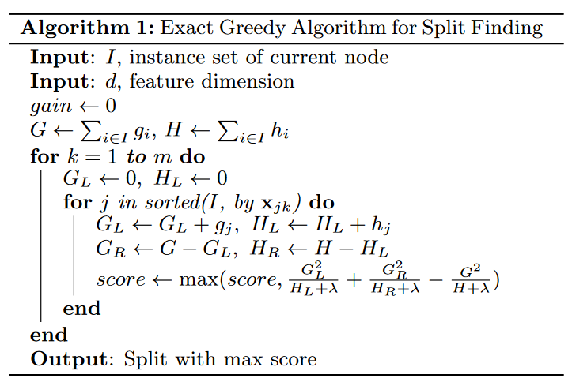
假设现在枚举的是年龄特征。现在要考虑划分点a，因此要计算枚举 和 的导数和：

可以看出，对于一个特征，对特征取值排完序后，枚举所有的分裂点a，只要从左到右扫描一遍就可以枚举出所有分割的梯度和，然后用式2-9计算即可。这样假设树的高度为H，特征数d，则复杂度为 。 其中，排序为，每个特征都要排序所以乘以d，每一层都要这样一遍，所以乘以高度H。这个仍可以继续优化（之后再讲）。
此外需要注意的是：分裂不一定会使得情况变好，因为有一个引入新叶子的惩罚项，优化这个目标相当于进行树的剪枝。当引入的分裂带来的增益小于一个阀值的时候，不进行分裂操作。
再次回到之前说的为啥这么推导：
大家可以发现，当我们正式地推导目标的时候，像计算分数和剪枝这样的策略都会自然地出现，而不再是一种因为启发式而进行的操作了（反观决策树充满着启发式）。
XGBoost 一些trick
本小节介绍XGBoost的一些trick，最后总结XGBoost快的原因。
步长 step-size
同之前的GBDT一样，XGBoost也可以加入步长（有的也叫收缩率Shrinkage），这也是防止过拟合的好方法：
通常步长 取值为0.1。当然GBDT也可以采用这个。
行、列抽样
XGBoost借鉴随机森林也使用了列抽样(在每一次分裂中使用特征抽样)，进一步防止过拟合，并加速训练和预测过程。
此外，在实现中还有行抽样（样本抽样）。
树节点划分算法 - Approximate Algorithm
前面提到过，XGBoost每一步选能使分裂后增益最大的分裂点进行分裂。而分裂点的选取之前是枚举所有分割点，这称为精确的贪心法（Exact Greedy Algorithm）.
当数据量十分庞大，以致于不能全部放入内存时，Exact Greedy 算法就会很慢。因此XGBoost引入了近似的算法。
简单的说，就是根据特征k的分布来确定个候选切分点，然后根据这些候选切分点把相应的样本放入对应的桶中，对每个桶的进行累加。最后在候选切分点集合上贪心查找，和Exact Greedy Algorithm类似。该算法描述如下：
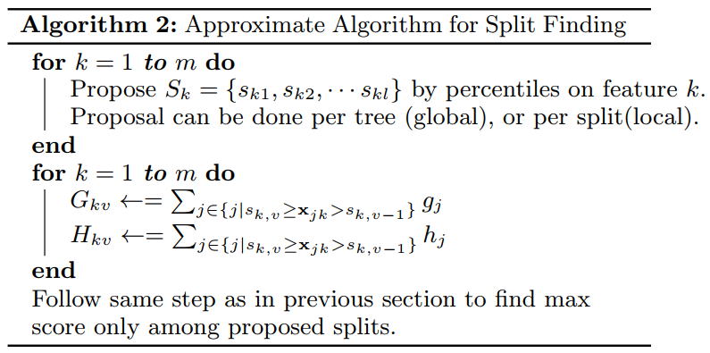
给定了候选切分点后，一个例子为：
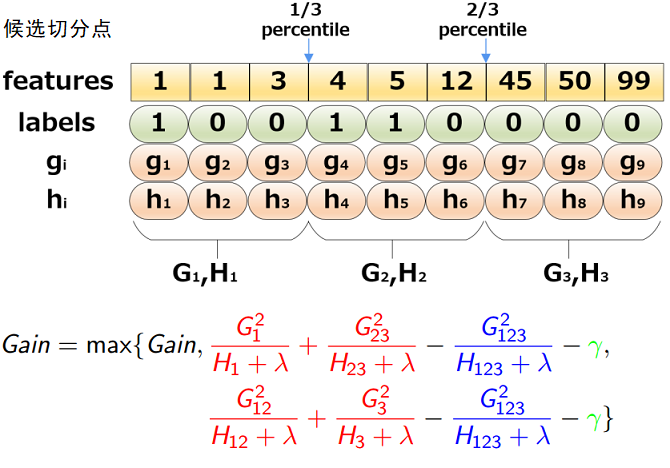
那么，现在有两个问题：
- 如何选取候选切分点呢？
- 什么时候进行候选切分点的选取？
第1个问题在下一小节说明，先回答第2个问题。
分界点选取时机
对于问题2，XGBoost有两种策略，全局策略（Global）和局部策略(Local)
- Global： 学习每棵树前， 提出候选切分点
- Local： 每次分裂前， 重新提出候选切分点
一个对比如下图：
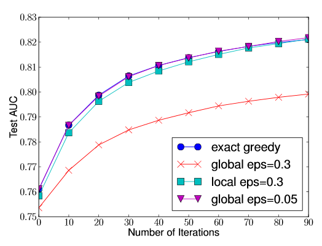
桶的个数等于 1 / eps， 可以看出:
- 全局切分点的个数够多的时候，和Exact greedy算法性能相当。
- 局部切分点个数不需要那么多，因为每一次分裂都重新进行了选择。
切分点的选取 - Weighted Quantile Sketch
对于问题1，可以采用分位数，也可以直接构造梯度统计的近似直方图等。
Notably, it is also possible to directly construct approximate histograms of gradient statistics [22]. It is also possible to use other variants of binning strategies instead of quantile.
先回答一下什么是分位数，WIKI百科上是这么说的
quantiles are cut points dividing the range of a probability distribution into contiguous intervals with equal probabilities, or dividing the observations in a sample in the same way.
即把概率分布划分为连续的区间，每个区间的概率相同。
以统计学常见的四分位数为例，就是：
四分位数（Quartile）把所有数值由小到大排列并分成四等份，处于三个分割点位置的数值就是四分位数。
1）第一四分位数(Q1)，又称“较小四分位数”，等于该样本中所有数值由小到大排列后第25%的数字；
2）第二四分位数(Q2)，又称“中位数”，等于该样本中所有数值由小到大排列后第50%的数字；
3）第三四分位数(Q3)，又称“较大四分位数”，等于该样本中所有数值由小到大排列后第75%的数字。
可以看出，简单的分位数就是先把数值进行排序，然后根据你采用的几分位数把数据分为几份即可。
而XGBoost不单单是采用简单的分位数的方法，而是对分位数进行加权（使用二阶梯度h），称为：Weighted Quantile Sketch。PS:上面的那个例子采用的是没有使用二阶导加权的分位数。
对特征k构造multi-set 的数据集：, 其中 表示样本i的特征k的取值，而则为对应的二阶梯度。
可以定义一个rank function为：
式3-2表达了第k个特征小于z的样本比例，和之前的分位数挺相似，不过这里是按照二阶梯度进行累计。而候选切分点要求：
太数学了？用大白话说就是让相邻两个候选分裂点相差不超过某个值。因此，总共会得到个切分点。
一个例子如下：
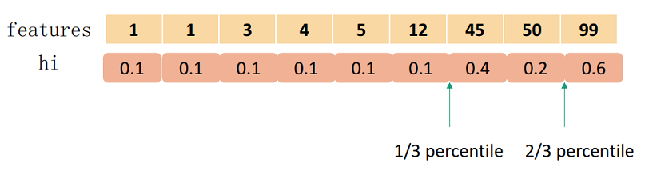
要切分为3个，总和为1.8，因此第1个在0.6处，第2个在1.2处。
那么，为什么要用二阶梯度加权？将前面我们泰勒二阶展开后的目标函数2-4进行配方：
\begin{align*} &\sum_{i=1}^N\left(g_if_t({\bf x_i}) + \frac{1}{2}h_if_t^2({\bf x_i})\right) + \Omega(f_t)\\ = &\sum_{i=1}^N\frac{1}{2}h_i\left(2\frac{g_i}{h_i}f_t({\bf x_i}) + f_t^2({\bf x_i})\right) + \Omega(f_t) \\ =&\sum_{i=1}^N \frac{1}{2}h_i\left(\frac{g_i^2}{h_i^2} +2\frac{g_i}{h_i}f_t({\bf x_i}) + f_t^2({\bf x_i})\right) + \Omega(f_t) \\ =&\sum_{i=1}^N \frac{1}{2}{\color{red}h_i}\left( f_t({\bf x_i}) - ({\color{red}- \frac{g_i}{h_i}})\right)^2 + \Omega(f_t) \tag{3-3} \end{align*}
推导第三行可以加入是因为和是上一轮的损失函数求导，是常量。
从式3-3可以看出，就像是标签为，权重为的平方损失，因此用加权。
PS: 原论文的符号错了，我推导的时候觉得很奇怪，查了很多介绍XGBoost的资料，都没有说明如何推导，直接把原公式一贴，这是很不好的。最后看到了Stack Exchange上的回答：
The second equation should have its sign reversed, as in:
\begin{align*} &\sum_{i=1}^N\frac{1}{2}h_i[f_t(x_i) - (-g_i/h_i)]^2 + constant\\ = &\sum_{i=1}^N\frac{1}{2}h_i[f_t^2(x_i) + 2\frac{f_t(x_i)g_i}{h_i} + (g_i/h_i)^2]\\ =& \sum_{i=1}^N[g_if_t(x_i) + \frac{1}{2}h_if_t^2(x_i) + \frac{gi^2}{2h_i}] \end{align*}
The last term is indeed constant: remember that the and are determined by the previous iteration, so they’re constant when trying to set .
So, now we can claim "this is exactly weighted squared loss with labels and weights
Credit goes to Yaron and Avi from my team for explaining me this.
-----from Need help understanding xgboost’s approximate split points proposal
稀疏值处理 - Sparsity-aware Split Finding
在真实世界中，我们的特征往往是稀疏的，可能的原因有：
- 数据缺失值
- 大量的0值（比如统计出现的）
- 进行了One-hot 编码
XGBoost能对缺失值自动进行处理，其思想是对于缺失值自动学习出它该被划分的方向（左子树or右子树）:
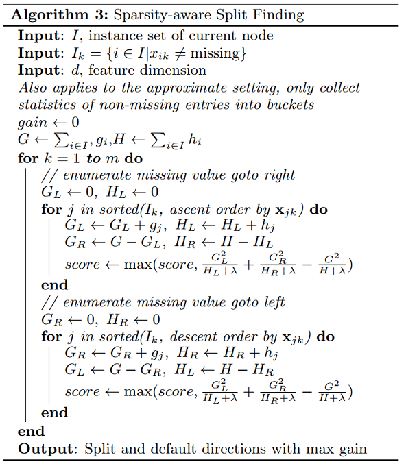
注意，上述的算法只遍历非缺失值。划分的方向怎么学呢？很naive但是很有效的方法：
- 让特征k的所有缺失值的都到右子树，然后和之前的一样，枚举划分点，计算最大的gain
- 让特征k的所有缺失值的都到左子树，然后和之前的一样，枚举划分点，计算最大的gain
这样最后求出最大增益的同时，也知道了缺失值的样本应该往左边还是往右边。使用了该方法，相当于比传统方法多遍历了一次，但是它只在非缺失值的样本上进行迭代，因此其复杂度与非缺失值的样本成线性关系。在Allstate-10k数据集上，比传统方法快了50倍:
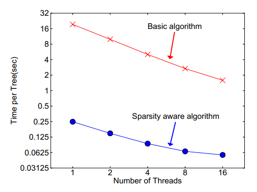
分块并行 - Column Block for Parallel Learning
在建树的过程中，最耗时是找最优的切分点，而这个过程中，最耗时的部分是将数据排序。为了减少排序的时间，提出Block结构存储数据。
- Block中的数据以稀疏格式CSC进行存储
- Block中的特征进行排序（不对缺失值排序）
- Block 中特征还需存储指向样本的索引，这样才能根据特征的值来取梯度。
- 一个Block中存储一个或多个特征的值
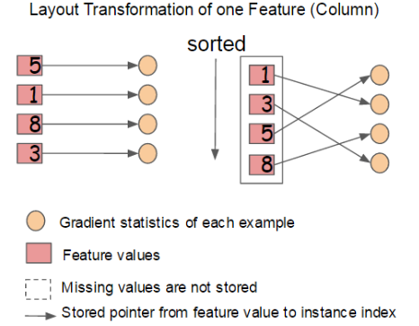
可以看出，只需在建树前排序一次，后面节点分裂时可以直接根据索引得到梯度信息。
- 在Exact greedy算法中，将整个数据集存放在一个Block中。这样，复杂度从原来的降为，其中为训练集中非缺失值的个数。这样，Exact greedy算法就省去了每一步中的排序开销。
- 在近似算法中，使用多个Block，每个Block对应原来数据的子集。不同的Block可以在不同的机器上计算。该方法对Local策略尤其有效，因为Local策略每次分支都重新生成候选切分点。
Block结构还有其它好处，数据按列存储，可以同时访问所有的列，很容易实现并行的寻找分裂点算法。此外也可以方便实现之后要讲的out-of score计算。
缺点是空间消耗大了一倍。
缓存优化 - Cache-aware Access
使用Block结构的一个缺点是取梯度的时候，是通过索引来获取的，而这些梯度的获取顺序是按照特征的大小顺序的。这将导致非连续的内存访问，可能使得CPU cache缓存命中率低，从而影响算法效率。
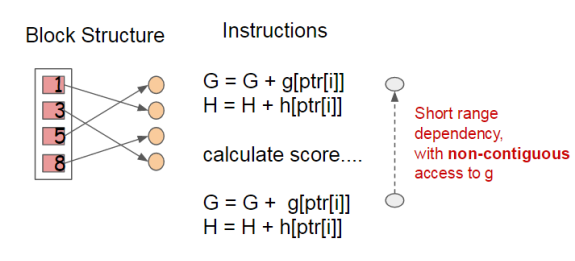
因此，对于exact greedy算法中, 使用缓存预取。具体来说，对每个线程分配一个连续的buffer，读取梯度信息并存入Buffer中（这样就实现了非连续到连续的转化），然后再统计梯度信息。该方式在训练样本数大的时候特别有用，见下图：
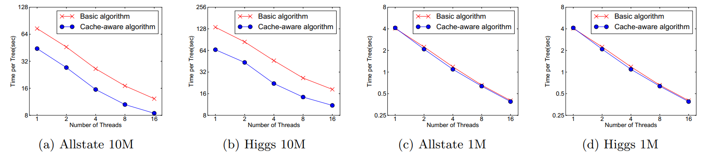
在approximate 算法中，对Block的大小进行了合理的设置。定义Block的大小为Block中最多的样本数。设置合适的大小是很重要的，设置过大则容易导致命中率低，过小则容易导致并行化效率不高。经过实验，发现2^16比较好。
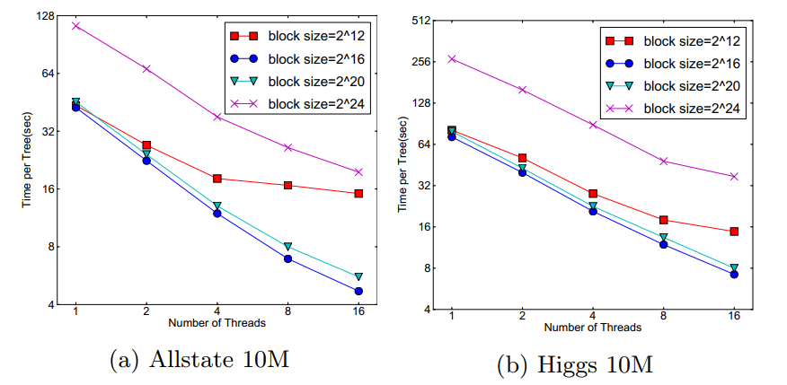
Blocks for Out-of-core Computation
当数据量太大不能全部放入主内存的时候，为了使得out-of-core计算称为可能，将数据划分为多个Block并存放在磁盘上。
- 计算的时候，使用独立的线程预先将Block放入主内存，因此可以在计算的同时读取磁盘
- Block压缩，貌似采用的是近些年性能出色的LZ4 压缩算法，按列进行压缩，读取的时候用另外的线程解压。对于行索引，只保存第一个索引值，然后用16位的整数保存与该block第一个索引的差值。
- Block Sharding， 将数据划分到不同硬盘上，提高磁盘吞吐率
总结
读到这里，相信你对XGBoost已经很有了解。下面总结几个问题：
XGBoost为什么快
- 当数据集大的时候使用近似算法
- Block与并行
- CPU cache 命中优化
- Block预取、Block压缩、Block Sharding等
XGBoost与传统GBDT的不同
这里主要参考weapon的回答，答案在：机器学习算法中GBDT和XGBOOST的区别有哪些？
- 传统GBDT以CART作为基分类器，XGBoost还支持线性分类器，这个时候XGBoost相当于带L1和L2正则化项的Logistic回归（分类问题）或者线性回归（回归问题）。
- 传统的GBDT只用了一阶导数信息（使用牛顿法的除外），而XGBoost对损失函数做了二阶泰勒展开。并且XGBoost支持自定义损失函数，只要损失函数一阶、二阶可导。
- XGBoost的目标函数多了正则项， 相当于预剪枝，使得学习出来的模型更加不容易过拟合。
- XGBoost还有列抽样，进一步防止过拟合。
- 对缺失值的处理。对于特征的值有缺失的样本，XGBoost可以自动学习出它的分裂方向。
- XGBoost工具支持并行。当然这个并行是在特征的粒度上，而非tree粒度，因为本质还是boosting算法。
XGBoost Scalable的体现
XGBoost的paper在KKD上发表，名为：《Xgboost: A scalable tree boosting system》，那么scalable体现在哪?
参考知乎上王浩的回答，修改如下：
- 模型的scalability：弱分类器可以支持cart也可以支持lr和linear， 但其实这是Boosting算法做的事情，XGBoost只是实现了而已。
- 目标函数的scalability： 支持不同的loss function, 支持自定义loss function，只要一、二阶可导。有这个特性是因为泰勒二阶展开，得到通用的目标函数形式。
- 学习方法的scalability：Block结构支持并行化，支持 Out-of-core计算（这点和王浩的看法不一样，他写的是优化的trick）
XGBoost 防止过拟合的方法
-
目标函数的正则项， 叶子节点数+叶子节点数输出分数的平方和
-
行抽样和列抽样：训练的时候只用一部分样本和一部分特征
-
可以设置树的最大深度
-
: 可以叫学习率、步长或者shrinkage
-
Early stopping：使用的模型不一定是最终的ensemble，可以根据测试集的测试情况，选择使用前若干棵树
参考资料
- Chen, Tianqi, and Carlos Guestrin. “Xgboost: A scalable tree boosting system.” Proceedings of the 22nd acm sigkdd international conference on knowledge discovery and data mining. ACM, 2016.
- XGBoost 与 Boosted Tree - 陈天奇
- GBDT算法原理与系统设计简介 - weapon
- GBDT详解 - 火光摇曳
- XGBoost解读(2)–近似分割算法
- XGboost核心源码阅读
- XGboost - github